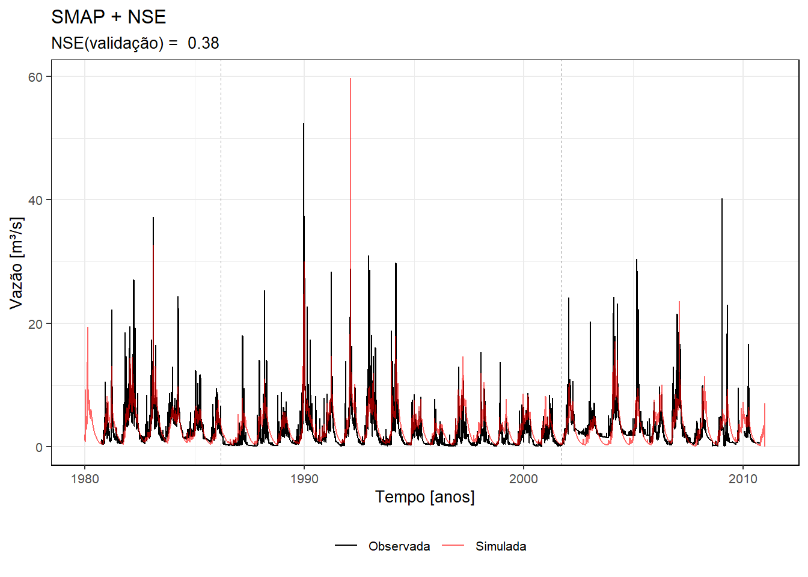
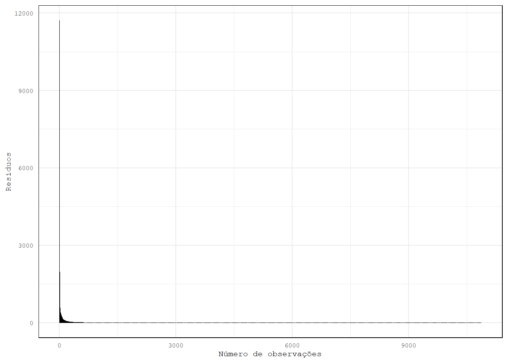

# Definições prévias
rm(list = ls()); gc() # limpar ambiente
set.seed(9) # definir seed
# Pacotes
pacman::p_load(lubridate, tidyverse, ggplot2, SoilHyP, beepr, patchwork, sf, stars, knitr)
# Importar funções
source("fun_run_hydromod.R") # função que roda o modelo completo
# Argumentos iniciais
path <- "Base de Dados" # diretório c/ arquivos `climate` e `streamflow`
catchment_code <- 697 # código da bacia hidrográfica da base CABraTrabalho Final – Simulação Hidrológica
Premissa do trabalho
Este trabalho consiste na aplicação e calibração dos modelos hidrológicos Hymod e SMAP para simulação de uma bacia hidrográfica escolhida na base de dados CABra (Almagro et al. 2023). Os objetivos envolvem a construção de uma função “modular” que permite escolher entre modelos, funções objetivos e calibradores diferentes. Serão aplicados dois calibradores conhecidos: o algoritmo de Nelder-Mead, de busca local, através da função nativa do R optim; e o algoritmo de busca global Shuffle Complex Estimation (SCE), através da função SCEOptim do pacote SoilHyP. A partir desta calibração, serão realizados: análise de sensibilidade dos parâmetros; avaliações com diferentes períodos de aquecimento, calibração e validação; verificação dos resíduos (possuem média igual a zero? são homoscedásticos?); e, finalmente, a estimação de quantis empíricos (observados) e simulados.
Área de estudo
A bacia hidrográfica escolhida é a de número 697, localizada no Distrito Federal, referente à drenagem do Ribeirão do Torto, com área igual a 233.39 km².
Aplicação
Modelos hidrológicos
O modelo SMAP (Soil Moisture Accounting Procedure) é um modelo concentrado que, de maneira geral, possui três reservatórios: um reservatório do solo, um reservatório superficial e um reservatório subterrâneo. O escoamento superficial modelado pelo método SCS (do Soil Conservation Service, atual Natural Resources Conservation Service). O funcionamento do SMAP se dá da seguinte maneira: para determinada lâmina precipitada, parte se torna escoamento superficial, parte evapora e parte abastece o reservatório do solo. A cada iteração, o volume nesses reservatórios é atualizado e a vazão (que soma os escoamentos base e direto) é calculada no “exutório”. O fluxo em cada reservatório é dado por uma relação linear.
São parâmetros do modelo SMAP:
str: capacidade total do reservatório do solo;k2t: coeficiente do escoamento direto;ai: abstração inicial (retenção de água no solo sem que haja escoamento);crec: coeficiente de recarga do reservatório subterrâneo;capc: define o nível a partir do qual haverá percolação (recarga);kkt: coeficiente do escoamento de base;tuin: teor de umidade inicial (condição inicial);ebin: escoamento de base inicial (condição inicial);
O modelo Hymod também é um modelo concentrado, porém com algumas características probabilísticas que buscam simular um comportamento distribuído no espaço. O modelo busca representar a distribuição espacial da capacidade de armazenamento (\(C\)), como se diferentes partes possuíssem diferentes “estados” de armazenamento ao longo do tempo. Cada ponto dentro da bacia teria uma capacidade e uma probabilidade de estar saturado. Essa probabilidade é dada por:
\[ P(C \leq c(t)) = \int_0^{c(t)} f(c)dc = F_c(c(t)), \] em que
\[ \begin{gather} f(c) = \frac{B}{C_{max}}\Bigg(1 - \frac{C}{C_{max}} \Bigg)^{B - 1}, \\ F(c) = 1 - \Bigg(1 - \frac{C}{C_{max}} \Bigg)^{B}. \end{gather} \]
São parâmetros do Hymod:
Cmax: capacidade máxima de armazenamento;B: grau de variabilidade espacial da capcidade de armazenamento de água no solo;Alpha: fator de distribuição do fluxo entre reservatórios lento e rápido;FractionLeavesSlowTank: fração do reservatório tempo que esvazia a cada passo de tempo;FractionLeavesQuickTank: fração do reservatório rápido que esvazia a cada passo de tempo.
Clibração
Duas funções objetivo serão empregadas neste exercício: o coeficiente de eficiência de Nash-Sutcliffe (KGE), dado por:
\[NSE = 1 - \frac{\sum(Q_{obs \ i} - Q_{sim \ i})^2}{\sum(Q_{obs \ i} - \bar Q_{obs})^2},\]
que pode ser intrerpretado como uma comparação entre dois modelos (um no denominador e outro no numerador), avaliados pelo erro quadrático médio; e o coeficiente de eficiência de Kling-Gupta (KGE), dado por:
\[KGE = 1 - \sqrt{(\bar Q_{sim}/\bar Q_{obs} - 1)^2 + (S_{sim}/S_{obs} - 1)^2 + (\hat\rho(Q_{sim}, Q_{obs}) - 1)^2},\] que, no fundo, computa diferentes componentes de distância. Ambos, quanto mais próximos de 1, indicam melhor ajuste do modelo.
Essas duas funções são utilizadas em um ambiente de otimização (nesse caso de maximização), respeitando restrições como limites máximos e mínimos dos parâmetros do modelo. O problema se resuma a minimizar a diferença entre a série observada e a série simulada maximizando estas duas funções objetivo.
Nesse contexto, diferentes algoritmos podem ser aplicados para fazer essa otimização. Neste trabalho serão utilizados dois algoritmos. O primeiro, Nelder-Mead (NM), é um algoritmo de busca local baseado no “simplex”, que testa mudanças de posição dos parâmetros, caminhando com eles até achar a melhor solução com base em critérios de parada – não muito adequado para modelos hidrológicos, pois estes algoritmos podem se prender em pontos mínimos/máximos locais. O segundo, baseado em algoritmos evolucionários, é denominado Shuffle Complex Evolution (SCE). Seu funcionamento consiste na construção de complexes, conjuntos de soluções geradas aleatoriamente, que são ordenadas conforme avaliações da função objetivo. A evolução desses grupos é feita, originalmente, usando o “simplex”. Atribui-se às soluções uma probabilidade de seleção baseado em sua posição e um novo grupo é formado selecionando um número de soluções conforme essa probabilidade – processo garante que até soluções com baixo valor da função objetivo sejam selecionadas evitando que o algoritmo fique preso em um ótimo local. Finalmente, é feita a mistura das soluções e a formação de novos grupos para repetição do processo até que os critérios de parada do algoritmo sejam atendidos.
Estrutura da função fun_run_hydromod
A função fun+run_hydromod foi desenvolvida como uma função modular que permite que o usuário possa escolher, principalmente, entre funções objetivo NSE ou KGE com which_obj, modelos hidrológicos SMAP ou Hymod com which_model e calibradores com which_cal. Adicionalmente, a plataforma CABra também dispõem de diferentes tipos de evapotranspiração, de modo que também é possível a escolha com o argumento which_et. Outros argumentos também são apresentados abaixo:
# Parâmetros
## path: 'character' caminho do diretório c/ arquivos:
### CABra_<catchment_code>_streamflow.txt e CABra_<catchment_code>_climate.txt
## catchment_code: 'int' código da bacia hidrográfica do CABra
## which_et: 'character' qual modelo (escolher 1) de evapotranspiração usar (et_ens, pet_pm, pet_pt, pet_hg)
## periods: 'vector' c/ períodos de aquecimento, calibração e validação (soma = 1)
## par: 'vector' de parâmetros do modelo hidrológico
## which_obj: 'character' c/ qual função objetivo utilizar (nse, kge)
## which_model: 'character' c/ qual modelo hidrológico utilizar (hymod, smap)
## ...: outros parâmetros:
### par_limits: tbl_df c/ colunas 'nome_par', 'min' e 'max' nessa ordem p/ SCEOptim
fun_run_hydromod <- function(path, catchment_code, which_et,
periods, par, which_obj = "nse", which_model = "hymod",
which_cal = "sce", control, ...){...}Internamente, a função chama, com a função source(), outras funções em um arquivo auxiliar proj_functions.R.
Rodando o modelo
Dados de entrada
Já definimos path (Base de Dados) e catchment_code (697) anteriormente. Vamos definir outros argumentos gerais necessários e, em seguida, os parâmetros específicos para as rodadas do modelo que faremos.
which_et <- "pet_pm" # modelo de evapotranspiração potencial (Penman-Monteith)
periods <- c(0.2, 0.5, 0.3) # perídos (%) de aquecimento, calibração e validação
# Parâmetros e limites
params <- list("hymod" = c("cmax" = 300, "b" = 0.3, "alpha" = 0.6, "f_lento" = 0.01, "f_rap" = 0.4),
"smap" = c("str" = 300, "k2t" = 0.3, "ai" = 0.1, "crec" = 5, "capc" = 0.35, "kkt" = 0.5, "tuin" = 200, "eb" = 20))
par_limits <- list("hymod" = tibble(par_name = c("cmax", "b", "alpha", "f_lento", "f_rap"),
min = c(50, 1e-6, 1e-6, 1e-6, 1e-6),
max = c(1000, 2, 1, 0.2, 0.9)),
"smap" = tibble(par_name = c("str", "k2t", "ai", "crec", "capc", "kkt", "tuin", "ebin"),
min = c(10, 1e-6, 1e-6, 1e-6, 1e-6, 1e-6, 10, 1),
max = c(1000, 1, 1, 10, 1, 1, 1000, 1000)))
control <- list(maxit = 20, # critérios de parada do SCE
reltol = 0.001,
ncomplex = 5,
tolsteps = 6,
trace = 1)As rodadas mencionadas referem-se às combinações entre 1) modelo e 2) função objetivo (usaremos somente o SCEOptim para calibrar os modelos). Usaremos um loop-for para rodar e armazenar os resultados em uma lista.
which_obj <- c("nse", "kge"); which_model <- c("hymod", "smap"); which_cal <- "sce"
combinations <- as_tibble(expand.grid(which_obj, which_model))
resultados <- vector(mode = "list", length = 4)
for(i in 1:nrow(combinations)){
fo <- combinations[[1]][[i]]
mod <- combinations[[2]][[i]]
message("\nComeçando combinação ", fo, " e ", mod, "...\n")
par <- params[[mod]]
lim <- par_limits[[mod]]
res_run <-
fun_run_hydromod(path = path,
catchment_code = catchment_code,
which_et = "pet_pm",
periods = periods,
which_obj = fo,
which_model = mod,
which_cal = which_cal,
par = par,
par_limits = lim,
control = control)
resultados[[i]] <- res_run
}
Começando combinação nse e hymod...Rodando bacia 697
Área igual a 233.39 km² Nr Iter Nr Fun Eval Current best function Current worst function 1 185 -0.742863 2.68689 2 316 -0.742863 2.68689 3 466 -0.754647 2.68689 4 610 -0.757305 2.68689 5 721 -0.760322 2.68689 6 824 -0.762826 2.68689 7 939 -0.763586 2.68689 8 1035 -0.765565 2.68689 9 1125 -0.766801 -0.595668 10 1246 -0.767852 -0.595668 11 1407 -0.76792 -0.595668 12 1538 -0.767988 -0.595668 13 1708 -0.767993 -0.595668 14 1834 -0.76801 -0.595668 15 1961 -0.768012 -0.595668Change in solution over [tolsteps] less than specified tolerance (reltol).
Começando combinação kge e hymod...Rodando bacia 697
Área igual a 233.39 km² Nr Iter Nr Fun Eval Current best function Current worst function 1 163 -0.8445 0.498878 2 275 -0.847675 0.498878 3 395 -0.853461 0.498878 4 498 -0.853911 0.127396 5 612 -0.85649 0.064395 6 717 -0.85808 0.064395 7 812 -0.859584 0.064395 8 970 -0.860239 -0.833013 9 1105 -0.860879 -0.833013 10 1224 -0.861202 -0.833013 11 1348 -0.861226 -0.839535 12 1471 -0.861233 -0.855078Change in solution over [tolsteps] less than specified tolerance (reltol).
Começando combinação nse e smap...Rodando bacia 697
Área igual a 233.39 km² Nr Iter Nr Fun Eval Current best function Current worst function 1 453 -0.0509338 4597.05 2 865 -0.282167 4597.05 3 1267 -0.446785 4597.05 4 1550 -0.449169 4597.05 5 1863 -0.449746 4597.05 6 2322 -0.449822 4597.05 7 2699 -0.450642 4597.05 8 2848 -0.452988 4597.05 9 2993 -0.454129 4597.05 10 3146 -0.454683 4597.05 11 3278 -0.455398 4597.05 12 3511 -0.457034 4597.05 13 3706 -0.458342 4597.05 14 3836 -0.464651 4597.05 15 3950 -0.501638 4597.05 16 4082 -0.557605 4597.05 17 4489 -0.559521 4597.05 18 4935 -0.560089 4597.05 19 5179 -0.560623 4597.05 20 5454 -0.560922 4597.05Maximum number of function evaluations or iterations reached.
Começando combinação kge e smap...Rodando bacia 697
Área igual a 233.39 km² Nr Iter Nr Fun Eval Current best function Current worst function 1 460 -0.0601636 68.8581 2 899 -0.525506 68.8581 3 1256 -0.536061 68.8581 4 1582 -0.553218 68.8581 5 2033 -0.554122 68.8581 6 2437 -0.557116 68.8581 7 2605 -0.568618 68.8581 8 2768 -0.58634 68.8581 9 3161 -0.588106 68.8581 10 3597 -0.588596 68.8581 11 3963 -0.589185 68.8581 12 4256 -0.589498 68.8581 13 4543 -0.589719 68.8581 14 4745 -0.590444 68.8581 15 4953 -0.591617 68.8581 16 5118 -0.594971 68.8581 17 5338 -0.595777 68.8581 18 5585 -0.595829 68.8581 19 5730 -0.596186 68.8581 20 5885 -0.598198 68.8581Maximum number of function evaluations or iterations reached.Séries simuladas
Vamos avaliar as séries históricas de vazão e os resultados das simulações.

Pelas séries históricas observadas, percebe-se que durante os anos de 2000 a 2006 houve um aumento nas vazões mínimas que não havia sido observado em anos anteriores (durante os anos de calibração). Essa diferença nas mínimas pode explicar a discrepância entre os coeficientes de eficiência da calibração e da validação. A primeira simulação, por exemplo, envolve o NSE e o modelo Hymod. Nessa rodada, o valor da função objetivo da calibração foi de -0.77, enquanto o da validação foi de apenas 0.26. Os resultados das demais rodadas são apresentados na tabela abaixo.
knitr::kable(fo_summary)| run_names | fo_validation | fo_calibration |
|---|---|---|
| hymod_nse | 0.2588847 | 0.7680123 |
| hymod_kge | 0.5804383 | 0.8612329 |
| smap_nse | 0.3819163 | 0.5609216 |
| smap_kge | 0.5852590 | 0.5981980 |
Os parâmetros calibrados podem ser visualizados na tabela abaixo.
knitr::kable(par_hymod)| run_names | cmax | b | alpha | f_lento | f_rap |
|---|---|---|---|---|---|
| hymod_nse | 492.0859 | 0.4631542 | 0.2211739 | 0.1999990 | 0.0261879 |
| hymod_kge | 568.0662 | 0.6483637 | 0.6351459 | 0.0230503 | 0.6286751 |
knitr::kable(par_smap)| run_names | str | k2t | ai | crec | capc | kkt | tuin | eb |
|---|---|---|---|---|---|---|---|---|
| smap_nse | 738.2815 | 0.9998516 | 0.6943655 | 0.5249737 | 0.7977038 | 0.5611409 | 25.60330 | 1.150222 |
| smap_kge | 680.3547 | 0.2575985 | 0.5673034 | 0.4274139 | 0.0244788 | 0.1968797 | 26.83153 | 1.052088 |
Analisando a série completa outro período chama a atenção, como evento observado em 1990. Vamos avaliar estes dois períodos mais profundamente para cada uma das rodadas realizadas.
Na Figura 5, percebe-se que somente o conjunto SMAP + KGE conseguiu representar adequadamente o o pico em janeiro de 1990. Em contraste, analisando as figuras anteriores (séries completas) é possível perceber que todos os modelos (à exceção do modelo HYMOD + NSE) prevêem um pico de vazão em “1992-02-08”. Seguiremos com a rodada 4 (SMAP + KGE) para as etapas de análise de sensibilidade e de avaliação dos erros.
Análise de sensibilidade
A análise de sensibilidade envolverá a utilização da função fun_obj_kge e da função fun.smap (que são chamadas dentro da função principal fun_run_hydromod). Faremos uma nova função que simplesmente roda, para um conjunto de parâmetros, o modelo SMAP e calcularemos a performance desta rodada com o KGE. Alteraremos um parâmetro por vez e avaliaremos gráficos de \(\theta_i\) vs. FO.
Já temos os dados originais (EPQ) armazenados dentro do objeto ts dentro da lista resultados de cada rodada anterior.
# Configurações iniciais
d <- 20 # número de discretizações
par_otimo <- resultados[[4]]$par # extrair parâmetros da rodada 4
names(par_otimo) <- par_names_smap # nomear parâmetros
ts_4 <- resultados[[4]]$ts # dados observados (s/ coluna "qsim")
# i <- 1
# Análise de sensibilidade
res_sense <- list()
for(i in seq_along(par_otimo)){
# Definir sequência de valores p/ parâmetro i
seq_valores <- seq(par_limits[["smap"]]$min[i], par_limits[["smap"]]$max[i], length.out = d)
kges <- numeric(d)
for(j in 1:d){
par_teste <- par_otimo
par_teste[i] <- seq_valores[j] # altera somente o parâmetro i
# Roda o modelo
qsim <- fun.smap(area = area_catchment,
x = par_teste,
EPQ = ts_4[, -1])
# KGE
qobs <- ts_4$qobs[!is.na(ts_4$qobs)]
qsim <- qsim[!is.na(ts_4$qobs)]
kges[j] <- -fun_obj_kge(obs = qobs, sim = qsim)
}
res_sense[[i]] <- tibble(par = names(par_otimo)[i],
value = seq_valores,
kge = kges)
}
# Combinar resultados
df_sense_plot <- bind_rows(res_sense)
plots_sense <- list()
for(p in seq_along(par_otimo)){
dados_par <- subset(df_sense_plot, par == names(par_otimo)[p])
plots_sense[[p]] <- ggplot(dados_par, aes(x = value, y = kge)) +
geom_line(color = "steelblue", linewidth = 0.7) +
geom_point(color = "firebrick", size = 1.5) +
labs(title = names(par_otimo)[p], x = "Parâmetro", y = "KGE") +
theme_bw() +
theme(panel.background = NULL,
legend.position = "none",
plot.background = element_rect(color = "white"),
panel.border = element_rect(color = "black", fill = NA),
text = element_text(family = "mono", size = 10))
}
wrap_plots(plots_sense, ncol = 2, nrow = 4)Vamos na Figura 6 que os intervalos definidos conseguem contemplar somente mínimos nos parâmetros str e crec. Nos demais (parâmetros que representam taxas, ou seja, porcentagens) são representados por retas. Os gráficos nas últimas linhas representam condições inciais (tuin e eb) e percebe-se que sua escolha pouco influencia o resultado do coeficiente de eficiência.
Avaliação dos erros
Queremos representar os dados observados \(Q_{obs}\) através de um modelo \(Q_{sim} = M(\theta|E,P,Q)\). Mas haverá sempre uma parcela a ser considerada de erros nessa modelagem \(\eta\), de modo que \(Q_{obs} = Q_{sim} + \eta\). Podemos analisar os resíduos de algumas maneiras. A primeira é através de uma plotagem de \(Q{obs} - Q_{sim}\) vs. \(Q_{obs}\):
Essa primeira análise visual permite verificar uma tendência de aumento nos resíduos quanto maior a vazão observada. O fato de que esses resíduos não são constantes para diferentes valores de vazão indicam que não são homocedástico. Podemos verificar também um histograma dos mesmos.
No histograma acima, apesar da aparente normalidade, é possível verificar que temos muitas observações nas caudas, especialmente na cauda esquerda com observações mais distantes.
Podemos fazer uma última análise ainda, avaliando o impacto que algumas observações exercem na estimativa do coeficiente de eficiência. Em seu trabalho, Clark et al. (2021) fazem uma avaliação do impacto que erros maiores têm na estimativa do coeficiente de Nash-Sutcliff. Os autores, em uma das abordagens de avaliação, ordenam os resíduos e removem aqueles que claramente se diferenciam dos demais para avaliar seu efeito no valor de \(\hat{KGE}\).
# Avaliar série de resíduos quadráticos
residuals_series <- (qobs - qsim)^2
mse_series <- sum(residuals_series)/length(residuals_series)
residuals_rank <- sort(residuals_series, decreasing = TRUE)
residuals_rank[1:10] [1] 11710.4103 1976.4547 1741.9296 1642.9757 1311.4639 1206.0695
[7] 1075.6079 1052.8772 914.5207 812.1366Nessa abordagem, os autores avaliam a influência dos 10 maiores resíduos no valor de \(\hat{MSE}\) com todas as observações.
k <- 10
influence_k <- sum(residuals_rank[1:k])/(length(residuals_series)*mse_series)

Observando a Figuras 8, é possível notar que um grupo pequeno de observação se destaca significativamente das demais e que os 10 maiores resíduos representam 28.39 % do \(\hat{MSE}\) total.
Quantis
quant_sim_ 1, 2, 3 e 4 representam, respectivamente, as rodadas “HYMOD + NSE”, “HYMOD + KGE”, “SMAP + NSE” e “SMAP + KGE”.
Percebe-se que a curva de permanência da rodada 4 (SMAP + KGE) é o que mais se aproxima dos quantis empíricos (da série de vazões observadas). Observa-se também que o Hymod é o modelo que mais se afasta dos quantis observados.
Nos últimos anos da série histórica, observou-se um aumento nas vazões mínimas. A escolha do Hymod, por exemplo, acarretaria em subestimativas dessas vazões mínimas.
Referências
Almagro, Andre, Paulo Tarso Sanches Oliveira, Antonio Alves Meira Neto, Tirthankar Roy, and Peter Troch. 2023. “CABra: A Novel Large-Sample Dataset for Brazilian Catchments.” Zenodo. https://doi.org/10.5281/ZENODO.7612350.
Clark, Martyn P., Richard M. Vogel, Jonathan R. Lamontagne, Naoki Mizukami, Wouter J. M. Knoben, Guoqiang Tang, Shervan Gharari, et al. 2021. “The Abuse of Popular Performance Metrics in Hydrologic Modeling.” Water Resources Research 57 (9): e2020WR029001. https://doi.org/10.1029/2020WR029001.